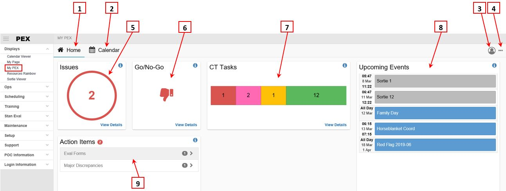

Displays¶
Calendar Viewer¶
Introduction
The Calendar Viewer displays Mission, Sortie, Personnel, and Aircraft Commitments in a calendar format, with four different calendar options: Month, Bi-Week, Week, and Day.
Permissions
The permission roles allowed to create Calendar Viewer filters are Flight Scheduling, Ground Scheduling, Operations Desk, Operations Staff, Training Administrator, and Administrator.
Setup the Calendar Viewer
On each tab, click the Display Options icon to select the data you want to see.
- Group View - The Group view groups the commitments together by Commitment Type.
- Individual View - The Individual View provides more detailed data on each individual commitment.
Note
Even if you show only a few details, hovering the cursor over a commitment provides all Commitment Details via a tool-tip.
Use the Calendar Viewer
The Calendar Viewer is used to see the schedule in order to make decisions. A small red arrow appended to the last entry of a day cell indicates that there are more entries for that day that could not be displayed due to the view’s space restrictions. To see these entries, click on the red arrow to change the display view.
- Mission Tab - Right-click on a mission to Hot Link to Mission Board (WinPEX only).
- Sortie Tab - Right-click on a sortie to Hot Link to Mission Board (WinPEX only) and/or View Sortie Details.
- Personnel Tab - Right-click on a person to Hot Link to Commitments Board - Personnel (WinPEX only).
- Aircraft Tab - Right-click on an aircraft to Hot Link to Commitments Board – Aircraft (WinPEX only).
Background Colors
The colors indicate the Commitment Type. Click the Color Legend icon to see their definitions. The colors come from Setup > Validation > Scheduling > Commitments Board.
Calendar Viewer differences between ePEX and WinPEX
The main difference is filters cannot be created in ePEX. They can be used in ePEX but must be created in the WinPEX Calendar Viewer. Another slight difference is the placement of control icons. In WinPEX they are at upper-left. In ePEX they are at upper-right.
My PEX¶
My PEX Basics¶
Introduction
Mobile-friendly My PEX currently supplements, and will replace, My Page as your portal into PEX. From My PEX you can view and manage matters relating to User Preferences, Go/No-Go, training, your schedule, and required signatures.
Permissions
Basic users can access all functionality in My PEX.
Note
If you are scheduled for an event "owned" by another unit, that event will appear in your calendar. Your visibility into the event may be limited by your permission level in that unit.
Rules
My PEX interfaces with multiple modules throughout PEX. Scheduling information interfaces only with the Scheduler. Information from legacy scheduling modules (Flying Schedule, Commitments Board, etc.) is viewable on My Page.
Module Notes
My PEX uses responsive design to automatically resize, hide, shrink, or enlarge how pages display on multiple devices; desktops, tablets, and phones. These instructions describe how PEX displays on a desktop monitor. Depending on the device used, some features and controls may appear compressed. All functionality is present regardless of the device used.
Controls
Access My PEX by logging into PEX, or navigate to Displays > My PEX. If, when logging into PEX, you still land on the legacy My Page, go to My Preferences (top right), Default Home Page, select the My PEX radio button, and click Save Preferences. Log out and log back in, and you will land on My PEX.
Workspace

- Home The initial landing page when logging into PEX. The Home page contains:
- Links to your calendar, avatar and more options.
- Five tiles, each providing a quick-look at categorized items requiring immediate attention, with a View link to more comprehensive information and functionally.
- Calendar View events you are scheduled for by month, week, and 3-day and 1-day views.
- Avatar Access your:
- My Profile View basic assignment and contact information, and link to your Preferences.
- Personnel Link to the Details tab of your Personnel record.
- Eval Folder. Link to your Stan/Eval Person Details page, from where you can open your Eval folder.
- Training Folder Opens your Training folder.
- More Options (…) Submit a Training Accomplishment Report (TAR) and view your ToDo list.
- Issues tile. Issues related to FCIF and PEX User Preferences.
- Go/No-Go tile. Your cumulative status for all Go/No-Go items.
- CT Tasks tile. The number of continuation training tasks overdue, coming due (long and short), and current.
- Upcoming Events tile. Your next five events as scheduled in Scheduler.
- Action Items tile. Forms requiring your signature.
Utilizing My PEX¶
Check for Issues
- Go to My PEX > Home > Issues tile.
- View the number of issues.
- Click View Details and the Issues Summary opens.
- View a list of FCIFs requiring signature and User Preference issues (e.g., location not set).
- Click the FCIF > button to sign FCIFs.
- Click the User Preferences > button view and resolve the issues.
Check your Go/No-Go status
- Go to My PEX > Home > Go/No-Go tile.
- View the cumulative status for all Go/No-Go items, for all your MDS and crew position qualifications.
- Click View Details and the Person Status Summary opens.
- View the status of individual Go/No-Go items. If you have multiple MDS or crew position qualifications, applicable Go/No-Go items will be listed under each qualification.
- Click the link next to each item to view more details or change the status (e.g., take a NoGo test).
Check your Continuation Training status
- Go to My PEX > Home > CT Tasks tile.
- View the number of tasks that are overdue (red), on a short warning (pink), on a long warning (orange), and current (green).
- Click View Details and the Continuation Training Summary opens.
- Use the search field to locate specific tasks.
- Tasks are categorized as Overdue, Short Warning, Long warning, Current, and Proficiency.
- Click the category title to expand and collapse its listing. Click the link next to each task to view more details.
Check your Schedule on the Home page
- Go to My PEX > Home > Upcoming Events tile.
- View your next five events scheduled in Scheduler.
- To see more:
- Click on an event and the Calendar opens with that event’s Details flyout opened.
- Click View More Events and the Calendar opens.
Check your Schedule in the Calendar
- Click the Calendar link on your Home page.
- When the Calendar opens, choose the Month, Week, 3-Day or Day view.
- Click on an event and the Event Details flyout opens, with details of that event.
- If you are scheduled for an event "owned" by another unit, your visibility into the event may be limited by your permission level in that unit.
Check your required Action Items/signatures
- Go to My PEX > Home > Action Items tile.
- View the number of action items.
- View the list of action items.
- Click View All and the Action Items Summary opens.
- View the list of all action items, by category.
- Click the link next to each to sign the item.
Check and update your Preferences
- Go to My PEX > Home > Avatar button.
- When your profile opens, click User Preferences.
- View and update preferences:
- Default Squadron. Your default squadron when accessing modules and pages throughout PEX. This is normally the squadron you are permanently assigned to. If in ARMS, this should be your ARMS squadron.
- Display Squadron. Displays your default squadron information, with pages formatted to the display squadron's settings. Normally, your default and display squadrons should be the same.
- Security Identifier. Use your SI to sign FCIFs and documents, and proctor exams, your SI consists of 6 to 9 characters, case sensitive. Default and Reset is your Personnel ID Number, normally your SSN.
- Default Home Page. Select My Page or My PEX. Small mobile devices automatically navigate to My PEX.
- Security Info. View your permission sets by squadron.
- Save Preferences. Be sure to.
TTPs¶
Sign off a FCIF
- Go to My PEX > Home > Issues tile.
- Click View Details.
- Click the FCIF > link.
- On the appropriate FCIF, enter your PEX Security Identifier.
- Click Sign Off.
Log continuation training on a non-mission TAR
Note
A non-mission TAR is not associated to an event; mission, sortie, shift, etc. To log a mission-associated TAR, go to My Page or Training > Continuation.
- Go to My PEX > Home > More Options (…) > Submit TAR.
- The Streamlined TAR dialog opens.
- From the TAR dropdown, select the appropriate TAR.
- For each task:
- View the number required, previously accomplished and remaining.
- Click (1-5) or enter the number accomplished (6 or more).
- Enter the date accomplished.
- Enter the time in hours and/or the accomplishment method (optional as determined by your unit).
- Click Print, if desired.
- Click Save.
View/Email your To Do List
- Go to My PEX > Home > More Options (…) > To Do List.
- The To Do List Email dialog opens.
- Select a date span.
- Select which Sections to include.
- Personnel will default to your name.
- Click the Edit Remarks button to add remarks.
- To view, click the View PDF button.
- To Email, enter a From Email address and, if desired, a CC Email address.
- Click Send Email.
Note
Use the Test Email function to validate email addresses and system settings.
Take a NoGo test
- Go to My PEX > Home > Go/No-Go tile.
- Click View Details.
- When the Person Status Summary opens, expand the appropriate MDS/CP qualification.
- On the Test row, click the Go to Testing link.
If logging into PEX opens the legacy My Page
- On My Page, click the My Preferences link.
- Go to the Default Home Page section.
- Select the My PEX radio button.
- Click Save Preferences.
- Log out and back in, and you will land on My PEX.
My Page¶
Introduction
My page is your main portal into PEX. This page brings together information about you onto a single screen. My Page displays your commitments, certifications, continuation training tasks, qualification training courses/task lists, evaluations, availability, read file items, and No-Go status. From My Page, you can report accomplished training, manage personal commitments and availability, bid on trips/sorties, report flight data, sign off read file items, and review qualification training progress.
You can also update your personal data, create favorite links, and change your PEX preferences. A supervisor can view the evaluation and training folders of their subordinates and send out To-Do lists.
Header Information
- Location - PEX uses this location to convert Zulu times to your local time. If you are in a different location than what is listed, click on the location to change it.
- Go/No-Go - Clicking on the tabs allows you to see No-Go details. A green tab indicates Go status. A red tab indicates No-Go status. A yellow tab indicates something that requires attention but doesn’t prevent you from accomplishing the mission, usually under supervision.
- My Preferences - Allows you to set your primary (default) squadron and Security Identifier. Your Security Identifier is used to sign off read file items and for aircraft commanders to sign off AFTO 781s. The page also displays your PEX permissions.
- My Personal Data - Allows you to view your data from the Personnel module. It also allows you to update your Contact tab information.
- My Links - Allows you to create up to ten user-defined and up to ten squadron-defined web pages. On the My Links page, select Settings, Edit Links. From this dialog you can enter and edit user-defined links. If you have the PEX administrator role, the Edit Squadron Links on My Page wil display here. You would be able to enter and edit links for the squadron.
- To Do List - Allows you to email and/or print a list of things to do based on data in PEX. As a supervisor, you can send To Do lists to your subordinates.
1-month and 3-month RAP Lookback, and a 7/30/60/90 day Flying Hour summary are available, when those functions are configured, in a new grid above the Commitments schedule. For each, the grid is not visible if not configured.
-
RAP Lookback - To view RAP Lookback, your primary MDS and crew position must be set in Setup > Personnel > Quals, and RAP must be set in Training > Continuation > Setup > RAP Requirements. The ARMS training import must be current to accurately reflect lookback. The grid displays the number of RAP sorties flown in 1 month and 3 months. For each, if RAP was met the field is green. If RAP was not met the field is pink.

-
Flying Hours - summary. To view the summary, the 7/30/60/90 day preferences Less Than and Greater Than must be set, and Use on My Page & GNG must be checked, in Training > Continuation > Setup > Unit Settings. The ARMS 7/30/60/90 import must be current. The grid displays hours flown in the last 7, 30, 60 and 90 days. If your hours are less than the minimum, the field is yellow. If your hours are more than the maximum, the field is pink. If your hours are greater than or equal to the minimum, and less than or equal to the maximum, the field is white.

View my schedule
At the top of My Page, PEX gives you a five-day view of your schedule. Calendar controls allow you to select which five days to view. PEX displays all your commitments, including sorties and shifts, from any squadron in the database. Each commitment has an Ack (Acknowledge) checkbox. When you check this Ack box, it lets the schedulers know you know about the commitment. When checked, a dialog asks if you’d like to schedule the commitment in Outlook. This functionality may be blocked by USAF. If you use PEX off of the USAF domain, select Yes to add the commitment to your Outlook calendar. If you’re scheduled on a Sortie, click the blue Sortie link for the Sortie displayed for that day. This provides you with details about the sortie. If the sortie is in a formation, you will also be able to view your wingman’s details.
Note
My Page does not display schedule information Scheduler. To view your Scheduler events, go to My PEX.
Enter my own appointments from My Page
Select the Manage Commitments link to open your personal monthly calendar. Click the start day to enter a personal commitment (appointment, leave, etc.). In the pop-up dialog, right-click and select Add. Enter your commitment details, click off the row to save, and select Close when done. You wil not be able to edit or delete commitments entered by your scheduler. Your scheduler is able to edit and delete commitments you entered.
Report training accomplished
- If you were scheduled on a Sortie or Commitment, click the blue TAR link to open an electronic TAR (worksheet) from the dropdown list. Enter the number and date accomplished for each task. Select the actual Sortie Type (if applicable). Click save and close the dialog.
- To report training not associated with a sortie or commitment:
- Click the TAR (Non-MSN) link. This also opens the TAR. Select a worksheet. Enter the number and date accomplished for each task. Click save and close the dialog.
- In My Data > Warnings or Continuation Tng, select the desired task and click the Report link. This also opens the TAR. Select a worksheet, or No worksheet selected. Enter the number and date accomplished for each task. Click save and close the dialog.
For sorties, report 781, Fuel, and Weapons used from My Page
-
AFTO 781 - To report 781 data, click the blue AFTO 781 link on a sortie in the Commitments panel. A dialog opens with a list of any other sorties scheduled for the same aircraft. Select the checkboxes next to the sorties you wish to enter 781 data for. Click Enter 781 data. Anyone can enter 781 data, but the Aircraft Commander must sign it off before the 781 can be audited or exported to ARMS. If you are the Aircraft Commander, click Sign, and enter your Security Identifier. For more info on the PEX AFTO 781, see the OPS, AFTO 781 help topic.
-
Fuel - At the bottom of the TAR, there is a Fuel Information section. Expand the section by clicking on the double-arrows. You can enter the fuel information for the sortie and PEX will calculate the Total Fuel Used, Total Fuel Burned, and Burn Rate. Additionally, you can enter any comments about the fuel usage and whether the sortie was effective or not. There are also Your Receiver Data and Your Tanker Data sections available so you can capture any pertinent information about your receivers or tankers. All fields in the Fuel Information sections are labels and may be customized by selecting the Label button in the Fuel Information header section. All of this information feeds the Scheduling> Reports> Fuel Report, which can be sent to your MAJCOM upon request.
-
Weapons - To report weapon events, click the blue WPN link on a sortie commitment. Select an Expenditure date. Click the Add Event button and select the weapons events performed during the sortie. Click Save, then click Save Report. The Weapons Officer can now review this report from the weapons module.
My Data
Use this section to see detailed information PEX has about you. Once you have a favorite section, use the pin at upper-right to make it the default view.
Warnings - Displays overdue Continuation Training tasks and unsigned read file items. Read file items display with red or yellow indicators. Red is for No-Go and yellow for Non-No-Go. You can sign off the items by clicking on the indicator, which brings up the Sign Off dialog. Select the item and click the View Link. If there is an attachment, click the link associated with the attached file to view it.
After review, click the Sign Off button.
Certifications - Displays your Letter of X certifications.
Continuation Training - Displays all your training tasks. The tasks are color-coded based on Due Dates:
- White – Not a currency task, no Due Date
- Green – Current
- Yellow – Current, Long Warning, defaulted to 60 days out
- Pink – Current, Short Warning, defaulted to 30 days out
- Red – Overdue
What looks like a color-code legend at the bottom, are actual y buttons you can click to filter the list.
Qualification Training - These are courses in which you are enrolled.
-
View your Progress Report - Above the Blocks of Instructions Requiring Student Review grid, select the course, then click the View button.
-
Sign off a Block of Instruction - In the Blocks of Instructions Requiring Student Review grid, select the Sign Off link. The status will change to Reviewed. Refreshing this page will make the BOIs go away. An empty list indicates there are no BOIs to review.
-
View your Training Folder - Click View My Training Folder. From the folder, you can sign off 623 tasks, make 623a entries, and sign off MFRs.
Stan/Eval - Displays your Open Evaluations, Failed Evaluations, Periodic Incomplete Requisites, and Non-Periodic Incomplete Requisites.
Bids & Availability - Designed for part-time personnel (ANG and AFRC). This section allows you to enter your availability and to bid on sorties and commitments.
-
Enter Availability - First a quick explanation. In PEX, Availability is not entering appointments and such. Those are considered commitments. Availability are the times you, as a part-timer, are available to be scheduled for duties. To enter your Availability, click the Manage Availability hyperlink. This opens a calendar to input your availability. To enter your available dates and times, simply click on the day, which brings up a second dialog where you can check the box for the periods you are available and set the status to Hard or Soft. The definition of Hard and Soft is up to your unit.
-
Enter Bids - Refer to the help topic at Scheduling> Bids & Availability.
FCIF (Read File Items) - Displays all your assigned read file items. To sign off an item, click on the indicator, which brings up the Sign Off dialog. Select the item and click the View Link. If there is an attachment, click the link associated with the attached file to view it. After review, click the Sign Off button.
Folders - Displays Training and Stan Eval Folders of personnel you supervise and the personnel they supervise. You can also email them their To-Do list from here.
The Notification feature includes three Qualification Training notifications; BOI Gradesheets requiring student review, Task List Tasks requiring signature, and 623a Entries requiring signature. Also included are links to the source document and signature function.
Resources Rainbow¶
Introduction
The Resources Rainbow displays Aircraft, Location, Mission, Personnel, and Squadron Commitments in a spreadsheet format. Basic User permissions are sufficient to view the Resources Rainbow.
Permissions
The permission roles allowed to create Resources Rainbow filters are Flight Scheduling, Ground Scheduling, Operations Desk, Operations Staff, Training Administrator, or Administrator.
Setup the Resources Rainbow
On each ePEX tab, click the Display Options icon to select the data you want to see. In WinPEX, click the icons.
-
Committed Resources - Shows only scheduled resources
-
All Resources - Shows unscheduled resources, in addition to scheduled resources.
-
Availability - For people who entered Personnel Availability, their availability information is viewable on the Day and Week views. Availability does not show in the Month view.
Use the Resources Rainbow
The Resources Rainbow is used to see the schedule in order to make decisions. When there is only one commitment in a time cell, the number 1 is not shown so that the display is not cluttered with a bunch of ones. When there is more than one commitment within a time cell, the number of commitments is shown. To display details about the commitment(s), click on the commitment cell.
The commitment(s) details will display in the Commitment Table. To clear the Commitment Table, click the Clear button.
-
Aircraft Tab - Right-click on an aircraft commitment to Hot Link to Commitments Board – Aircraft (WinPEX only).
-
Mission Tab - Right-click on a mission to Hot Link to Mission Board (WinPEX only).
-
Personnel Tab - Right-click on a person commitment to Hot Link to Commitments Board - Personnel (WinPEX only).
Background colors
The colors indicate the Commitment Type; except for red, which indicates conflicting commitments.
Multiple, non-overlapping, commitments are displayed in light blue. Click the Color Legend icon to see the definitions. The colors come from Setup > Validation > Scheduling > Commitments Board.
Resources Rainbow differences between ePEX and WinPEX
The main difference is filters cannot be created in ePEX. They can be used in ePEX but must be created in the WinPEX CV. Another slight difference is the placement of control icons. In WinPEX they are at upper-left. In ePEX they are at upper-right.
Sortie Viewer¶
Introduction
The Sortie Viewer module allows you to design and then electronically display user-defined schedule data. The Full Screen View can be displayed on computer monitors, TV screens, LCD projectors, or plasma screens. The Sortie Viewer Template Manager allows you to save Sortie Viewer designs. The ePEX Sortie Viewer displays the output file created and distributed by WinPEX. To make the ePEX Sortie Viewer work, within the WinPEX Sortie Viewer, identify a Full Screen Display Output Path File to the web server's ePEX directory or alternatively to a shared directory and configure IIS to read the file into the web server's ePEX directory.
- On the Selection Tab, ”drag and drop” Available Labels and Data Elements from the list boxes below into the Selected Labels and Data Elements box above. The Selected Labels and Data Elements box can display up to 16 data elements across and seven (7) data elements down. There are a few rules that must be followed in order to get your display to come out right.
- Elements from the following list boxes can be used without restriction: Missions, Sorties, Crew Position, and Custom Labels.
- Before using data elements from the Mission Events (ME) or Sortie Events (SE) list boxes, you must select the event identifier label from the Mission or Sortie Events Labels list boxes.
For example, say you want to display the Sortie Show Date/Time: from the SE Labels list box, drag the label ”Show” to the top box. From that point on (until you drag another ME or SE Label), everything you drag from the SE list box will relate to the ”Show” event. Using our example, from the SE list box, drag the events ”Scheduled Date” and ”Scheduled Time.” Caution: Drag the same Label only once per display, e.g., don't drag "Show" more than once.
After dragging the label up to the top area, entries from the ME or SE list can be dragged on top of the label, if desired to eliminate the "extra" label. - Before using data elements from the Aircraft or Aircraft Status list boxes, you must select the ”Tail#” data element from the Sorties list box. That way, PEX knows which aircraft you want the data for.
For example, say you want to display aircraft status and parking location: from the Sorties list box, drag "Tail#." Then from the Aircraft Status list box drag "Status" and "Parking."
- After using the ”[User Defined]” label, you must tab/click out of the field before dragging another label/data element.
- To display crewmember remarks, select all of the desired crew positions (or 'Entire Crew') before selecting 'Crew Remarks.'
Note
- To increase the size allotted for a data element, "drag and drop" the same data element next to the original and the size wil be doubled. Do it a third time and the space is tripled and so on. This works for any data element, however, "remarks" will only display a limited size with the entire remark visible in a roll over tool tip. Using the ”[User Defined]” label from the Custom Labels list box allows you to create your own labels.
- To display an air-refueling track name (e.g., AR101N), low-level route name (e.g., IR-644), a MOA name (e.g., Eglin 1), etc., you need to ensure back in the Mission Board that the name is included as part of the ”Location” for the appropriate Sortie Event (e.g., AR Initial Point, LL Entry Point, MOA Entry Point). Then, in Sortie Viewer, drag the appropriate Sortie Event Label (e.g., ARIP, LLEP, or MOA Entry) to the top grid followed by the "Location” data element.
- Do not use empty fields.
- Once you have completed your Labels and Data Elements, save your design using Tools, Template Manger, and then select the Layout tab.
- Modify the Header and Footer data to your liking. The Header and Footer always remain in view in the Full Screen mode. The Footer is a useful place to display takeoff and landing data. Once you have completed your Layout, save your design by using Tools, Template Manager.
Note
The templates for the Selection tab and Layout tab are independent of each other. They are managed separately.
Tip
In the header and footer areas, if you type in
<br\>it will force a line break in your final display. The area that says "Additional Remarks" can be used as a third area to enter remarks. - Select your desired Full Screen Options and Preview your design. Click Save to save your preferred Full Screen Options. Identifying a Full Screen Display Output File Path on a shared directory allows other network users to view the display without having PEX software installed on their computer. Placing the file on the ePEX web server allows access via the Sortie Viewer display in ePEX . In order to enable this option you must take the following steps:
On the IIS server
- Explore to the C:\inetpub\wwwroot directory.
- Right click on the ePEX directory and choose the Sharing and Security menu option.
- Click the 'Share this folder' radio button and accept the default Share name.
- Click Apply.
- Click the Permissions button on the Sharing tab.
- Give Everyone 'Full control' and Click OK.
- On the security permissions tab give Domain Users 'Modify' rights.
On the client
- Map a drive to the newly created ePEX share
- In the Full Screen Display Output File Path browse to the ePEX directory of the ePEX web server.
Note
If you need to restrict access to the web server the administrator could create a specific active directory group and give the 'Full Control' share and 'Modify' security permissions to that group, then give group membership to specific domain users. It is the network user name which requires access to the share, not the PEX username.
Tip
The Sortie Viewer can display one Squadron or All Squadrons. In ePEX you cannot determine the selection layout. Therefore, if the ePEX Sortie Viewer is to be used, then the selection of labels and data elements, as well as the Layout (Header and Footer Information) needs to be coordinated across the various units.
- Select View, Full Screen or click the Full Screen icon. To print the Full Screen View, right-click and select Print. To exit Ful Screen mode, press Esc.
Sortie Viewer Menu
- File - Same as PEX
- Edit -
- Undo, Cut, Copy and Paste are non-functional this version.
- Clear Data – Removes all labels and data elements from the Selected Labels and Data Elements box. Also available as an icon on the menubar.
- View -
- Toolbar - Turns the Toolbar on and off.
- Status Bar - Turns Status Bar on and off.
- Full Screen - Only functional on Layout tab. Displays what you have designed in the ful -screen mode.
- Tools - Template Manager. Brings up the Sortie Viewer Template Manager dialog. Using this dialog you can save, edit, rename, delete, and set default Sortie Viewer displays.
- Window - Same as PEX
- Help - Same as PEX